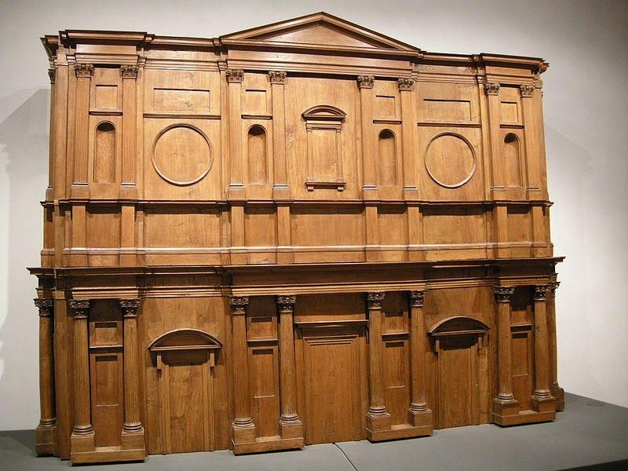
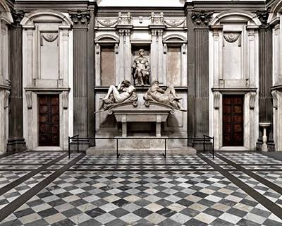
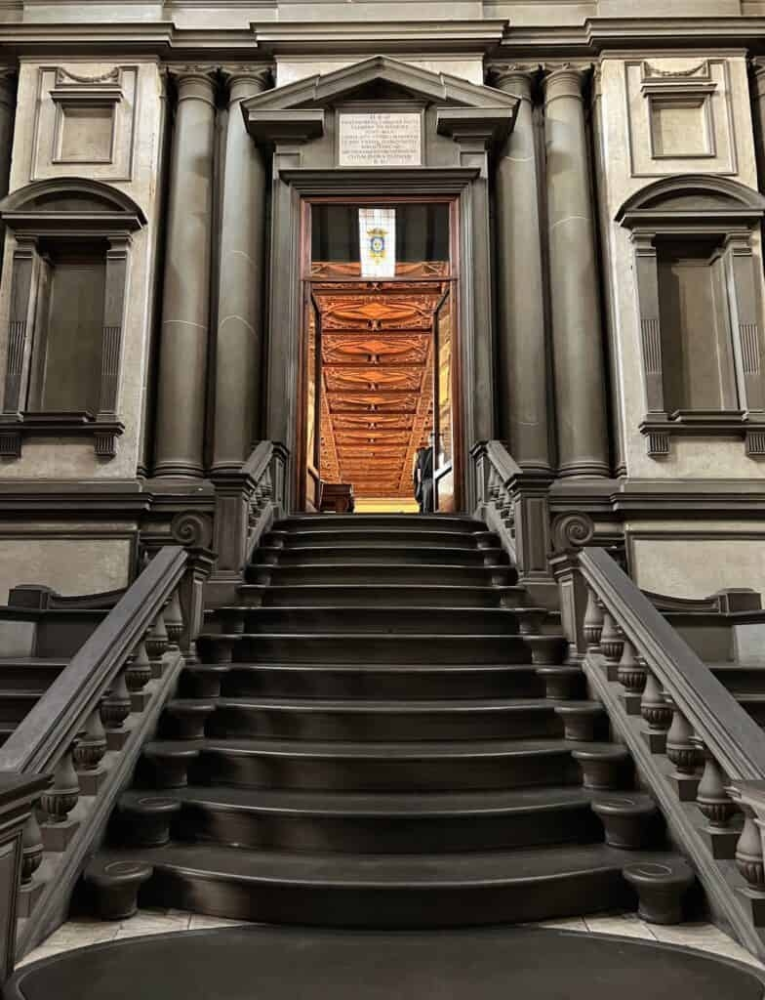
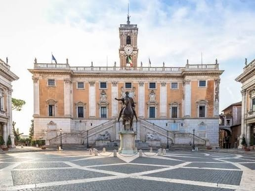
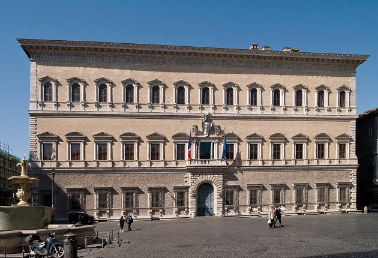
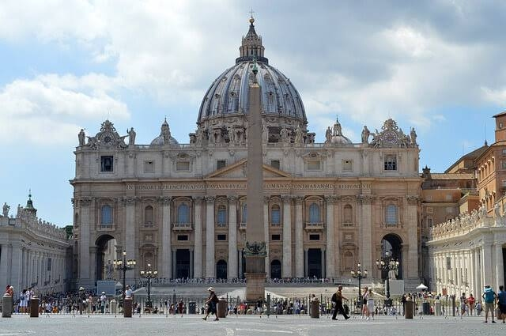
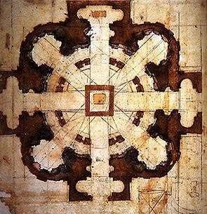
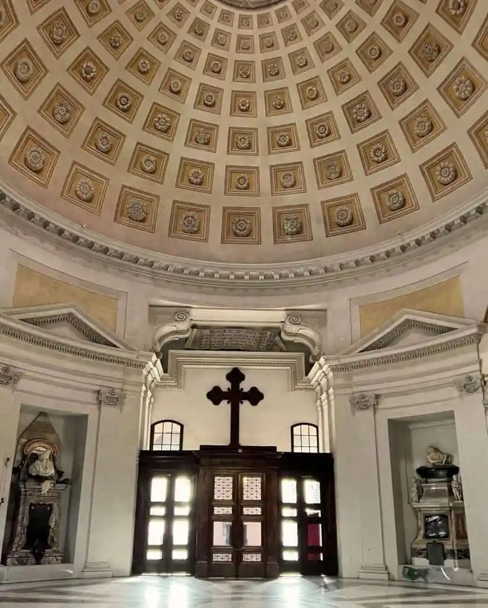

Miguel Ángel recibió encargos arquitectónicos en Florencia y Roma. En sus proyectos utilizó elementos clásicos, pero los combinó con formas dinámicas y composiciones monumentales.
Entre sus trabajos se encuentran la Biblioteca Laurenziana, la plaza del Campidoglio y la dirección de las obras de la basílica de San Pedro. En esta última trabajó en un diseño para sostener la gran cúpula.
Línea del tiempo de la arquitectura
Explorá algunos de los principales proyectos arquitectónicos de Miguel Ángel. Podés desplazarte por la línea, hacerle zoom para poder visualizar las obras mejor y también ampliarlas.


Fachada de San Lorenzo
Encargo de 1516 · Proyecto no realizado
Miguel Ángel diseñó una fachada monumental para la iglesia florentina de los Médici, pero la obra fue abandonada.


Sacristía Nueva
Desde 1520 · Florencia
Capilla funeraria de los Médici en la iglesia de San Lorenzo, donde arquitectura y escultura forman un conjunto.


Biblioteca Laurenziana
Desde 1524 · Florencia
El vestíbulo y su escalera destacan por sus formas dinámicas. Ammannati completó la escalera siguiendo los planos de Miguel Ángel.


Plaza del Campidoglio
Desde 1546 · Roma
Reorganizó la plaza con una composición trapezoidal y un diseño ovalado para el pavimento. El conjunto se completó después de su muerte.


Palazzo Farnese
Desde 1546 · Roma
Se hizo cargo de las obras del palacio y diseñó, entre otros elementos, su gran cornisa y el escudo central.


Basílica de San Pedro
Desde 1546 · Vaticano
Revisó el proyecto para reforzar la estructura y diseñó la cúpula, construida después de su muerte.


San Giovanni dei Fiorentini
Proyecto de 1559 · No construido
Diseñó una planta compleja con espacios ovalados y rectangulares, pero su propuesta no llegó a realizarse.


Santa Maria degli Angeli
Desde 1563 · Roma
Adaptó parte de las antiguas termas de Diocleciano para crear una iglesia que aprovechara sus grandes espacios.